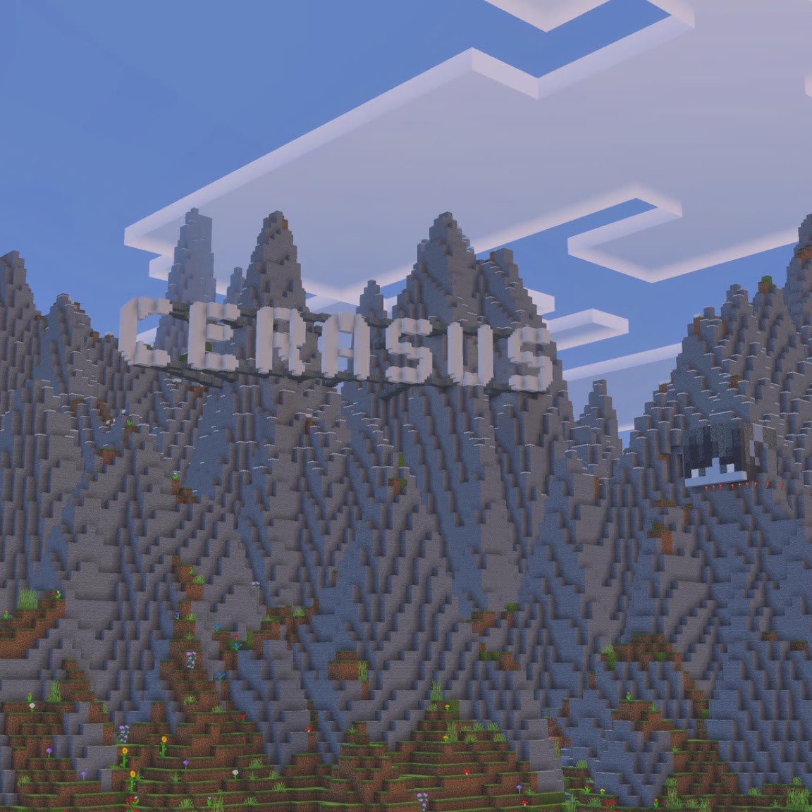

RULERCRAFT · CITY ARCHIVE
Cerasus
“Mankind — Redefined.”
A city built on Rulercraft around one simple idea: make something worth remembering.
RESIDENT NATION
China
WORLD MAP
1:500
RULERCRAFT · 1:500 WORLD MAP
CERASUS
It isn't just
a Minecraft town.
It's a place where architecture, infrastructure and imagination come together.
Mankind — Redefined.
THE CITY
Simple.
Ambitious.
Cerasus is designed around recognizable landmarks, clean infrastructure and a constantly evolving skyline.
See the projects →APPLE PARK
Where architecture
becomes a landmark.
A Cerasus interpretation of Apple's iconic headquarters. A ring of glass, landscape and precision — recreated block by block.
Explore Apple Park →MORE FROM CERASUS
There's more
to discover.
THE CERASUS ARCHIVE
How it
began.
Every city has a beginning. This is ours.
Cerasus is founded.
Cerasus begins as a small settlement in Antarctica on the Rulercraft world. The first chapter begins.
FOUNDATIONCerasus begins to grow.
The settlement begins taking shape, with the first major construction projects laying the foundations for the city to come.
DEVELOPMENTA city takes shape.
Cerasus begins to develop beyond its original settlement, establishing the landmarks and ideas that would define it.
EXPANSIONA new home.
Cerasus leaves Antarctica and relocates to mainland China, beginning a completely new chapter for the city.
RELOCATIONCerasus rises again.
Construction begins at the city's new home. Familiar landmarks return alongside new ideas, giving Cerasus a fresh identity.
RECONSTRUCTIONThe Hillmark rises.
Overlooking Cerasus, the Hillmark is built as a symbol of the city itself — featuring the Cerasus name and its mayor's Minecraft likeness, inspired by the iconic Hollywood Sign.
LANDMARK
And we're
still building.
Cerasus continues to expand with new landmarks, infrastructure and ideas. The story isn't finished yet.
ACTIVE DEVELOPMENT
0
resident
China
nation
1:500
world map
∞
possibilities
CONTACT
Let's build
something.
Interested in Cerasus, want to collaborate, or just want to get in touch? Reach out through any of the channels below.
COME SEE IT
Cerasus is
waiting.
Find the city on Rulercraft and see what we've built.